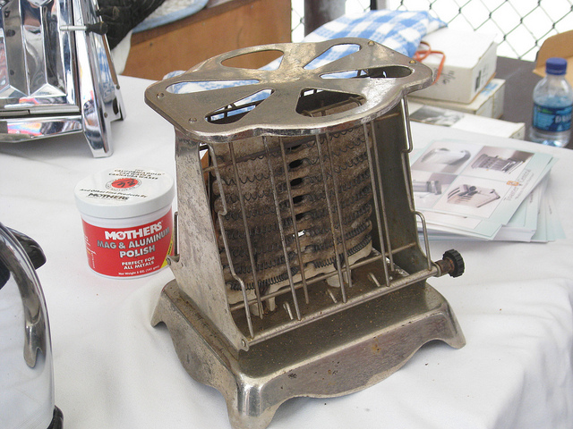
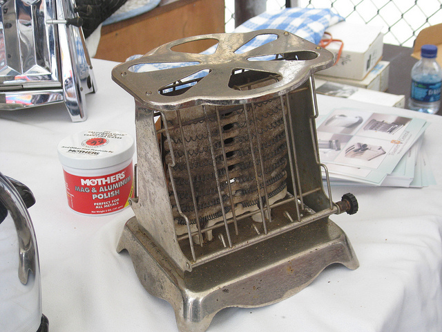

{kind=link}
{kind=link}
{kind=link}
{kind=link}
{kind=link}
- ƒ/3.5
- 10.0 mm
- 1/100
- 200
- Flash (off, did not fire)
- Show EXIF
- Make - Canon
- Orientation - Horizontal (normal)
- X-Resolution - 180 dpi
- Y-Resolution - 180 dpi
- Date and Time (Modified) - 2010:08:01 12:51:31
- YCbCr Positioning - Centered
- ISO Speed - 200
- Exif Version - 0220
- Date and Time (Original) - 2010:08:01 12:51:31
- Date and Time (Digitized) - 2010:08:01 12:51:31
- Components Configuration - Y, Cb, Cr, -
- Compressed Bits Per Pixel - 5
- Exposure Bias - 0 EV
- Max Aperture Value - 3.5
- Metering Mode - Multi-segment
- Flashpix Version - 0100
- Color Space - sRGB
- Focal Plane X-Resolution - 14506.66667
- Focal Plane Y-Resolution - 14485.2071
- Focal Plane Resolution Unit - inches
- Sensing Method - One-chip color area
- File Source - Digital Camera
- Custom Rendered - Normal
- Exposure Mode - Auto
- White Balance - Auto
- Digital Zoom Ratio - 1
- Scene Capture Type - Standard
- Macro Mode - Normal
- Self Timer - Off
- Quality - Superfine
- Canon Flash Mode - Off
- Continuous Drive - Single
- Focus Mode - Single
- Record Mode - JPEG
- Canon Image Size - Large
- Easy Mode - Full auto
- Digital Zoom - None
- Contrast - Normal
- Saturation - Normal
- Sharpness - 0
- Camera ISO - Auto
- Metering Mode - Evaluative
- Focus Range - Auto
- AFPoint - Face Detect
- Canon Exposure Mode - Easy
- Lens Type - Unknown (-1)
- Long Focal - 23.2 mm
- Short Focal - 5.8 mm
- Focal Units - 1000/mm
- Max Aperture - 3.6
- Min Aperture - 10
- Flash Bits - (none)
- Focus Continuous - Single
- AESetting - Normal AE
- Image Stabilization - On
- Zoom Source Width - 3264
- Zoom Target Width - 3264
- Spot Metering Mode - Center
- Manual Flash Output - n/a
- Focal Type - Zoom
- Focal Plane XSize - 5.84 mm
- Focal Plane YSize - 4.39 mm
- Auto ISO - 183
- Base ISO - 100
- Measured EV - 5.38
- Target Aperture - 3.6
- Target Exposure Time - 1/101
- White Balance - Auto
- Slow Shutter - Off
- Sequence Number - 0
- Optical Zoom Code - 4
- Flash Guide Number - 0
- Flash Exposure Comp - 0
- Auto Exposure Bracketing - Off
- AEBBracket Value - 0
- Control Mode - Camera Local Control
- Focus Distance Upper - 0.54
- Focus Distance Lower - 0
- Bulb Duration - 0
- Camera Type - Compact
- Auto Rotate - None
- NDFilter - Off
- Self Timer2 - 0
- Flash Output - 0
- Canon Image Type - IMG:PowerShot SD850 IS JPEG
- Canon Firmware Version - Firmware Version 1.00
- File Number - 100-1339
- Rotation - 0
- Canon Model ID - PowerShot SD850 IS / Digital IXUS 950 IS / IXY Digital 810 IS
- AFMode - Multi-point AF
- Num AFPoints - 9
- Valid AFPoints - 9
- Canon Image Width - 3264
- Canon Image Height - 2448
- AFImage Width - 1088
- AFImage Height - 245
- AFArea Widths - 196 196 196 196 196 196 196 196 196
- AFArea Heights - 44 44 44 44 44 44 44 44 44
- AFArea XPositions - -196 0 196 -196 0 196 -196 0 196
- AFArea YPositions - -44 -44 -44 0 0 0 44 44 44
- AFPoints In Focus - 1
- Primary AFPoint - 1
- Thumbnail Image Valid Area - 0 0 0 0
- Date Stamp Mode - Off
- My Color Mode - Off
- Firmware Revision - 1.00 rev 3.00
- Categories - (none)
- Faces Detected - 0
- Face Detect Frame Width - 320
- Face Detect Frame Height - 240
- Image Unique ID - f50e5a8ac5d13dfae441408a91beac8e
- Interop Index - R98 - DCF basic file (sRGB)
- Interop Version - 0100
- Related Image Width - 3264
- Related Image Height - 2448
- Compression - JPEG (old-style)
- Thumbnail Offset - 5120
- Thumbnail Length - 5583
- Camera ID - 72157600316000762
- Camera Type - Point and Shoot
This photo is in 1 album
- Vintage Toasters 5 photos
Additional info
S
Search
Photo navigation
<
>
Thumbnail navigation
L
View in light box
B
Back to context